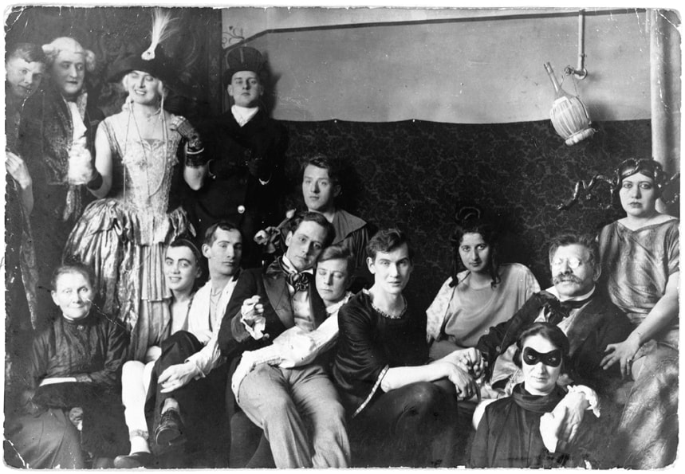

In pre-Nazi Germany, a doctor named Magnus Hirschfeld sets out to take down Paragraph 175, a law against “unnatural fornication” between men. Hirschfeld’s plan is to scientifically prove that homosexuality is natural, and that lesbians and gay men might be born gay—but his idea ends up falling into the wrong hands.

Party at the Institute for Sexual Science. Magnus Hirschfeld (second from right) is the one with the moustache and glasses. His partner Karl Giese is holding his hand.
German students parade in front of the Institute for Sexual Research prior to their raid on the building. The students occupied and pillaged the Institute, then confiscated the Institute's books and periodicals for burning. Credit: United States Holocaust Memorial Museum
German students and Nazi SA plunder the library of Dr. Magnus Hirschfeld. The materials were loaded onto trucks and carted away for burning. The public library of the Institute comprised approximately 10,000 mostly rare German and foreign books on the topics of sex and gender. Credit: United States Holocaust Memorial Museum
GUESTS
-
Robert Beachy is the author of Gay Berlin: Birthplace of a Modern Identity.
-
Ralf Dose is the co-founder of the Magnus Hirschfeld Society and author of Magnus Hirschfeld: The Origins of the Gay Liberation Movement.
-
Edward Stein is the author of the The Mismeasure of Desire: The Science, Theory, and Ethics of Sexual Orientation.
FOOTNOTES
-
Read (in German) Sappho And Socrates, a booklet Magnus Hirschfeld published under a pseudonym in 1896, defending homosexuality.
-
Read Magnus Hirschfeld’s grand opus, "The Homosexuality of Men and Women."
CREDITS
This episode of Undiscovered was reported and produced by Elah Feder and Annie Minoff. Editing by Christopher Intagliata. Fact-checking help from Michelle Harris. Original music by Daniel Peterschmidt. Our theme music is by I am Robot and Proud. Art for this episode by Claire Merchlinsky. Special thanks this week to Liat Fishman for translation from German, Shane McMillan for production help in Berlin, to Tobias Enzenhofer and Charles Bergquist for voice work. Thanks to Science Friday’s Danielle Dana, Christian Skotte, Brandon Echter, and Rachel Bouton.

Founding support for Undiscovered comes from the John Templeton Foundation.